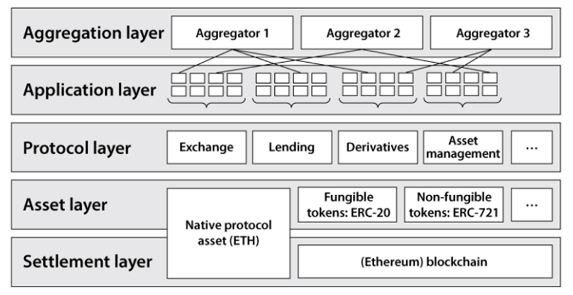
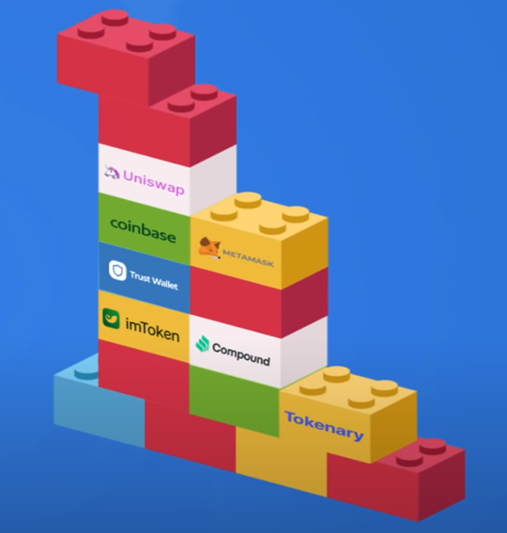
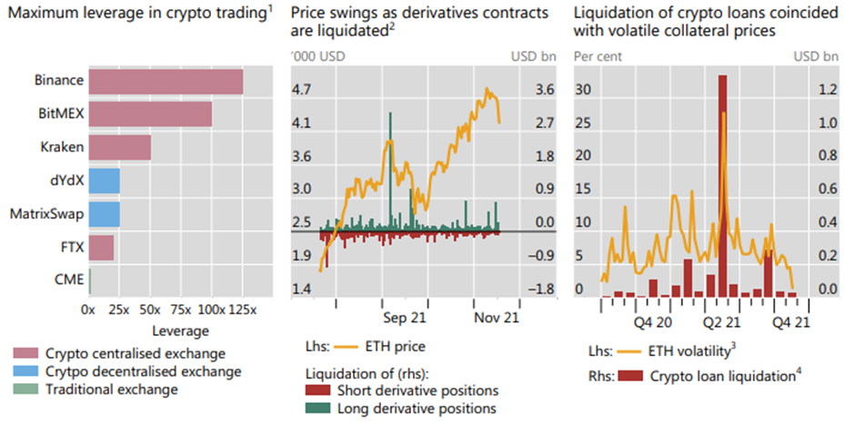

Decentralised Finance - Examine the working principles and Appraise the future of DeFi
Assignment Topic
Perform a comprehensive overview on Decentralised Finance. Your answer should include (but not limited to) the following:
Part 1
Examine the working principles of Decentralised Finance (DeFi).
Part 2
Appraise the future of DeFi based on your understanding on its potential, risks, and challenges.
Part 1 - Examine the working principles of Decentralised Finance (DeFi)
Decentralized finance (DeFi) refers to a blockchain based financial infrastructure built on top of public smart contract platforms such as Ethereum. It is based on open protocols where agreements are enforced by smart contract codes.
Smart contracts are the cornerstone of Decentralized Finance (DeFi), enabling DeFi applications to deliver financial services without the need for intermediaries, custodians, or central clearing houses.
Smart contracts are stored on a blockchain and are executed by a large set of validators, allowing any participant to verify the execution of the code and the resulting state changes independently.
Smart contracts exhibit the following behaviour:
Deterministic, Secure, and verifiable – Contracts execute as specified and can be verified by any participant
Transparent – Smart contract codes are viewable publicly
Immutable- completed operations cannot be reversed
Atomic- contract execution is atomic and results in either a successful state change or reverts to the original state

1) The settlement layer is made up of the blockchain and its native asset or coin. This layer functions as the settlement and dispute resolution layer.
2) The asset layer consists of assets or tokens that are issued on top of the settlement layer.
3) The protocol layer provides standards for specific use cases such as lending, decentralized exchanges, asset-management, and derivatives.
4) The application layer enables the creation of end user applications that can connect to individual protocols.
5) The aggregation layer is an extension of the application layer. Aggregators create user-centred interfaces that can connect to different protocols from a single touchpoint.
There are five main components in DeFi: Asset Tokenization, Decentralized Exchanges, Lending markets, Decentralized Derivatives and Asset Management.
Asset Tokenization
Asset Tokenization refers to the process of adding new assets to a blockchain. (Decentralized Finance: On Blockchain- and Smart Contract-Based Financial Markets | St. Louis Fed, 2021b)
Tokenization allows for easier asset transfers easy between users, making assets more accessible and transactions more efficient. Tokenized assets can be used in various decentralized applications (DApps) and are stored within smart contracts. When issued using common standards like ERC-20, tokens are interoperable and can be used in multiple DeFI protocols.
Tokens that tie their value to a reference asset with stable pricing, are called stablecoins. For example, Dai is a token that is pegged to the US dollar and maintains the same value as the Fiat currency. Stablecoins bridge the gap between Fiat currencies and cryptocurrencies, allowing people to have an asset with less price fluctuation.
Stable Coins can be backed by on-chain or off-chain collateral. For example, ether is used as on-chain collateral to create new Dai tokens pegged to the US dollar. To mint new Dai tokens, one would first need to lock ether as collateral in a smart contract. As the USD/ETH exchange rate is variable, users usually need to lock more ether (over-collateralize).
USDT and USDC, are examples of stable coins backed by physical US dollars off-chain. WBTC is a tokenized version of Bitcoin, and DGX is a stable coin backed by gold. Collateralizing tokens off-chain can mitigate exchange rate risk but introduces familiar counterparty risks and external dependencies.
Tokens can serve a variety of purposes and have different utilities. For example, governance tokens allow holders to perform specific actions like voting. There are also tokens that resemble real world assets shares or bonds. One distinct category of tokens that have grown importance in recent times are non-fungible tokens (NFTs). These tokens consist of unique assets which include game items, artwork, and collectibles.
NFTs are minted using the ERC-721 standard, making them non-fungible and unique, enabling each token to be individually tracked and identified.
Decentralized Exchanges
Centralized cryptocurrency exchanges require users to deposit their assets and leave the assets’ custody to the exchanges, including the safekeeping and use of public and private keys. Users forgo access to their digital assets and have to explicitly trust the exchange. This exposes users to multiple risks as dishonest exchange operators could steal their customer keys and assets. Centralized crypto exchanges also represent a point of failure, facing constant threats of hacking and asset theft. For example, it was reported that around $292,665,886 worth of cryptocurrency and 510,000 user logins were stolen from crypto exchanges in 2019 (Thompson, 2020).
Decentralized exchanges (DEXs) attempt to mitigate these risks by introducing a trust-less trading marketplace. For example, in decentralized exchanges like Uniswap, users can trade, exchange and swap cryptocurrencies without depositing funds or assets, maintaining complete control of their assets and keys. Trades are executed atomically through a smart contract, where both buy and sell transactions are performed in one synchronously, eliminating counterparty risk. Smart contracts effectively perform many existing functions done by intermediaries like escrow services, custodians and counterparty clearing houses (CCPs).
Lending Markets
Through lending protocols, users can borrow crypto assets or lend their cryptocurrency assets in exchange for interest, allowing them to earn income without giving up ownership rights on their assets. Borrowers and lenders do not need to identify themselves as DeFi loans are not reliant on trusted relationships.
Instead, to mitigate counterparty risk, there are two distinct approaches.
Transactions are done atomically. The borrower receives and uses the loan, and repays, in the same transaction. If he fails to return the loan at the end of the transaction’s execution cycle, his loan will be invalidated along with any benefits derived from the transaction. These types of loans are usually referred as ‘flash’ loans.
Loans are also secured with collateral locked in smart contracts.
In collateralized debt positions (CDP) borrowers first create a vault (smart contract) and ‘lock’ their cryptocurrencies as collateral. They then mint new tokens up to a specified collateralization ratio allowed. The newly minted tokens are fully collateralized and allow the users to get new liquid asset which they can trade for other cryptocurrencies or hold to earn interest.
To close a CDP, the borrower simply returns the minted tokens including any accrued interest to the smart contract. Borrowers can withdraw their collateral upon successful repayment of their debt. When borrowers fail to repay, or when the value of the collateral falls below the collateralization ratio threshold, the smart contract automatically liquidates the locked-up collateral to recover the debt amount.
Lending markets also make it possible to borrow existing cryptocurrencies from other users. Lenders and borrowers can be matched via Peer to Peer(P2P) or liquidity pools. In P2P matching, lenders are matched to specific borrowers which allows for both parties to agree on customized maturities and interest rates.
On the other hand, liquidity pools aggregate the funds of all borrowers in a single, lending pool. Users can earn interest which is derived as a function of the pool’s utilization rate. Some examples of DeFi projects using a liquidity pool to provide credit include Aave, Compound and dYdX.
In DeFi lending markets, there are no credit scores, or credit history requirements before utilization. This enables more users from diverse locations and economic backgrounds to tap on new sources of funding where they would have otherwise had no access to in centralized finance.
Decentralized Derivatives
Decentralized derivatives are tokens that reference the price of tokens or other real-world assets.
These derivatives can derive their value from an underlying asset’s performance or the outcome of an event.
In Asset-based derivative tokens investors mint new tokens that track the price movements of a variety of real-world assets like stocks, precious metals, or other crypto currencies.
Inverse tokens are recent instruments which allow investors to get short exposure to cryptocurrencies.
Event-based derivative tokens are tokens that track events with different potential outcomes. These are used in prediction markets where users trade in predicted outcomes for events like sporting, economic or world events. The tokens also enable fractionalization into sub-tokens where users can participate in pooled contracts for a fraction of the cost. These can be further traded through secondary sales. When the event ends, the smart contract will divide the pooled assets to the token owners of the winning outcome.
Asset Management
DeFi asset management funds are used in portfolio diversification and allow users to get exposure to a basket of crypto assets. These funds use a variety of trading strategies which are programmed into smart contracts. Smart contracts are used to hold crypto assets in custody and accord investors with complete control over their assets.
Passive funds use smart contracts to automatically execute trading strategies, including portfolio rebalancing and trend trading. Actively managed funds allow human fund managers to manage fund strategies within predefined strategies and rulesets which are pre-programmed into smart contracts. For example, Enzyme Finance employs smart contracts to ensure that fund managers adhere to the fund strategies. Restrictions like token concentration, price limits, and the number of maximum trades can be automatically enforced by smart contract codes.
When a user invests, the smart contract mints, and issues tokens to investors. These represent ownership of the fund and allows holders to redeem their share as and when required.
Part 2 - Appraising the future of DeFi
DeFi has the potential to make the financial system and financial services more efficient, transparent, and accessible.
The existing financial system is based on trust and depends on central third parties and intermediaries managing your money and ideally acting in your best interests. DeFi can replace the roles and functions of these intermediaries through the use of smart contracts. For example, decentralized exchanges (DEXs) allow users to swap cryptocurrencies for other types of cryptocurrencies directly peer to peer. Transactions can be settled atomically, where both parties are assured of successful execution or none at all. This reduces counterparty risk significantly while making token transfers faster than any similar asset transfer or transaction with traditional centralised exchanges, for a fraction of the cost.
With traditional centralized exchanges, there are many intermediaries involved in facilitating the trade lifecycle. This imposes large trading fees on users and dependencies on multiple potential points of failure. For example, exchanges or brokers could run the risk of having liquidity issues in times of market volatility. Settlement of transactions are also not instant and can take days, as in the case of stock trades. Decentralized exchanges like Uniswap allow users to exchange or swap cryptocurrencies instantly, with minimal custodial risk for significantly smaller transaction fees.
In DeFi applications, all transactions are transparent and publicly observable, with smart contract codes viewable and accessible on-chain. This allows for a higher level of transparency compared to traditional finance, where most of the data is scattered over multiple proprietary databases. Transparency can allow for the early detection of potential risks, allowing regulators to analyse potential consequences to the financial system and mitigate any systemic risk event
Potentially, anyone can use DeFi applications. As there is no identity required, there would be less discrimination on who can use financial services. In traditional finance, users first need to have bank or trading accounts before they can access financial services. Their identities are screened against central watch-lists to prevent access to ‘bad-actors’ as defined by governments or regulators. Further, users can also be turned away because of associations to certain organizations, poor credit histories, income levels or nationalities. DeFi architecture can facilitate a more open and accessible financial system where ‘bad’ actions during transactions are mitigated by smart contract codes instead of restricting access to potential ‘bad actors’ before they can commit ‘bad’ actions.
DeFi protocols and applications share the same settlement layer, and this enables for a high level of interoperability and interconnection. Similar to pieces of Lego blocks, different services and protocols can be integrated to create new bundles of financial services; potentially creating new services and products to address the needs of users. Any existing protocol or application can be used by other smart contracts for different use cases. This flexibility allows for a large number of permutations and possibilities for new models and services.
Composability - Lego Blocks
Imagine DeFi with different blocks representing different protocols and applications. Developers could assemble a combination of protocols for a new product or service. With the stackable architecture, developers can build on existing protocols and applications; mixing and matching different functions to create completely new financial services and products. With interoperability, new projects would not exist as single-use isolated projects but functions as new building blocks, for future new projects.
For example, the lending project Compound uses the Maker Dao CDP tool, the stablecoin DAI and their own smart contract to build a lending protocol that uses Maker Dao’s pre-built borrowing infrastructure. Instead of building the credit infrastructure from scratch, Compound connected with existing DeFi projects to create a new, useful financial services.
The Zerion project uses the Maker Dao CDP tool, Compound, Uniswap, Metamask, imToken, Trust wallet, Coinbase wallet and Tokenary protocols to provide users with multi-service platform to cryptocurrency and NFTs portfolios. DeFi’s stackable and interoperable architecture allows for creativity and multiple use cases.

Risks in Decentralized Finance
Smart contracts - Incorrect codes and bugs
Smart contracts can potentially have coding errors or bugs which create vulnerabilities to attacks and exploits. For example, attackers could steal funds from the smart contracts, or render protocols unusable. Given that smart contracts are stored in public blockchains where anyone can view and interact with the code, attackers can easily identify potential vulnerabilities.
For example, The DAO was an early decentralized autonomous organization (DAO) set up to act as an investor-directed venture capital fund. 3 months after its launch in 2016, hackers exploited vulnerabilities (‘Reentrancy Bug’) in its wallet’s smart contract codes. Specifically, the code allowed for repeated withdrawals before checking whether the attacker was entitled to withdraw those balances. This allowed the attackers to siphon almost $60 million worth of Ether which eventually led to a Hard fork to the version of Ethereum we know now (The DAO: What Was the DAO Hack?, n.d.).
Leverage
In lending markets and decentralized exchanges, users can typically borrow assets and re-use them as collateral for other transactions, allowing one to incrementally build large exposures. Crypto-based derivatives in DEXs involve a large amount of leverage which typically exceeds the levels allowed in regulated centralized exchanges. As these DeFi platforms are unregulated, there is technically no limit in terms of how much exposure a user can accumulate. While DeFi trading platforms allows for anyone to participate, this does not mean that everyone understands the financial risk of such transactions. Leverage enables users to trade large notional values with smaller amount of capital and can lead to oversized losses for investors in time of market volatility. The problem is further exacerbated when more assets are being reduced or liquidated collectively by smart contracts, which can trigger further downward pressure on prices. Interconnectedness among assets in different DeFi applications can adversely impact the system’s stability.
DeFi relies exclusively on posted collateral to mitigate risk. In contrast, in centralized finance, banks can expand their balance sheets through bank deposits and rely on central banks in times of extreme stress.
The destabilising role of leverage can be observed during the crypto crash in September 2021 (see fig 3) when forced liquidations on loans and derivatives on DeFi platforms accompanied sharp spikes in volatility.

Centralized Price Oracles and Dependencies
Many smart contracts in DeFi protocols are reliant on external data sources. External data sources or oracles and may introduce dependencies which can be exploited. For example, in 2020, bad actors used a flash loan to drive up the price of DAI on Coinbase which was used as an oracle by the DeFi lending platform Compound. This subsequently caused numerous liquidations as the value of the loans exceeded collateralization-ratio thresholds leading to almost $90 million worth of loans being liquidated (Gogo, 2020). In this case, Compound had relied on a single Oracle source from Coinbase as reference for its loan values instead of multiple oracle networks with a larger variety of data sources.
With most DeFI protocols relying on Oracle services for their everyday functions, outages from oracle services can have damaging downstream effects on the services using them. Without Oracles, DeFi protocols stop working and are completely isolated and have no knowledge of the outside world other than the transactions added to their own native blockchain. This represents an important and yet unaddressed point of failure for a technology that aims to provide services to anyone round the clock.
Scams and “Rug Pulls”
A rug pull happens when a development team abandons a project and sells all their tokens.
Typically, a DeFi project creates tokens and launches their tokens on a DEX. They offer high rewards to new investors, who in turn contribute their crypto assets to the liquidity pool. Once the pool gets large enough, the developers sell all their holdings on the DEX causing the price of their token to crash. Rug pulls are common in the DeFi space as projects can be easily listed on DEXs with little to no KYC or AML. Many projects are anonymous, making it easy for bad actors to defraud investors without revealing their identities (Malwa, 2021).
Governance Risks
Governance tokens allow token holders to vote on the direction of the project and participate in the decision making for how the project is run. However, governance tokens can also lead to centralization by participants with the financial means to accumulate a majority. This can lead to bad actors manipulating the project for his/her own economic benefit. For example, in March 2021, the True Seigniorage Dollar (TSD) stablecoin was attacked by a single hacker who amassed a majority of the governance tokens. The hacker subsequently voted to mint and issue a large amount of stablecoins to himself/herself, enabling him/her to sell the tokens and crashing the entire project
In conclusion, DeFI is still at its early stages and will face many more challenges and risks. One key challenge will be the role of regulators and governments. As many DeFI protocols enable investments with expected returns, this would surely attract the attention of regulators globally. Some regulators like the UAE, may welcome such innovation; while others like China, may just ban such projects to protect customer interests.
References
Decentralized Finance: On Blockchain- and Smart Contract-Based Financial Markets | St. Louis Fed. (2021, February 5). https://research.stlouisfed.org/publications/review/2021/02/05/decentralized-finance-on-blockchain-and-smart-contract-based-financial-markets
Thompson, P. (2020, January 5). Most Significant Hacks of 2019 — New Record of Twelve in One Year. Cointelegraph. https://cointelegraph.com/news/most-significant-hacks-of-2019-new-record-of-twelve-in-one-year
The DAO: What Was the DAO Hack? (n.d.). Gemini. https://www.gemini.com/cryptopedia/the-dao-hack-makerdao
Eichholz, L. (2021, April 13). DeFi Attacks: Flash Loans and Centralized Price Oracles. Glassnode Insights - On-Chain Market Intelligence. https://insights.glassnode.com/defi-attacks-flash-loans-centralized-price-oracles/
Gogo, J. (2020, November 27). $100 Million Liquidated on Defi Protocol Compound Following Oracle Exploit. Bitcoin News. https://news.bitcoin.com/100-million-liquidated-on-defi-protocol-compound-following-oracle-exploit/
Malwa, S. (2021, December 17). DeFi ‘Rug Pull’ Scams Pulled In $2.8B This Year: Chainalysis. https://www.coindesk.com/markets/2021/12/17/defi-rug-pull-scams-pulled-in-28b-this-year-chainalysis/
Exploiting a Smart Contract without Security Vulnerabilities: Analysis of True Seigniorage Dollar Attack Event. (2022, January 7). Medium. https://certik.medium.com/exploiting-a-smart-contract-without-security-vulnerabilities-analysis-of-true-seigniorage-dollar-c319dce45783
Abdulhakeem, S. A. (2021, January 14). Powered by Blockchain Technology, DeFi (Decentralized Finance) Strives to Increase Financial Inclusion of the Unbanked by Reshaping the World Financial System. https://scirp.org/journal/paperinformation.aspx?paperid=106546